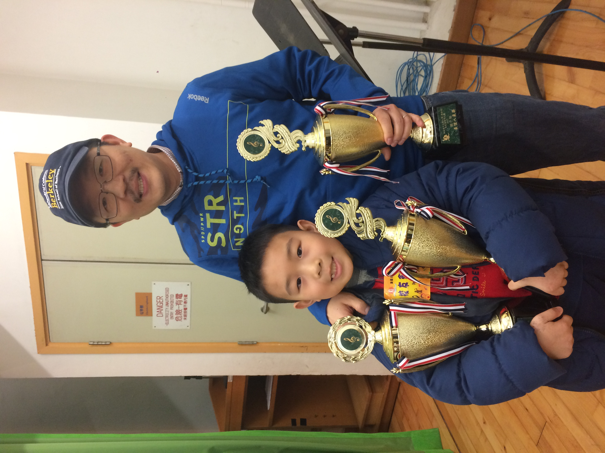
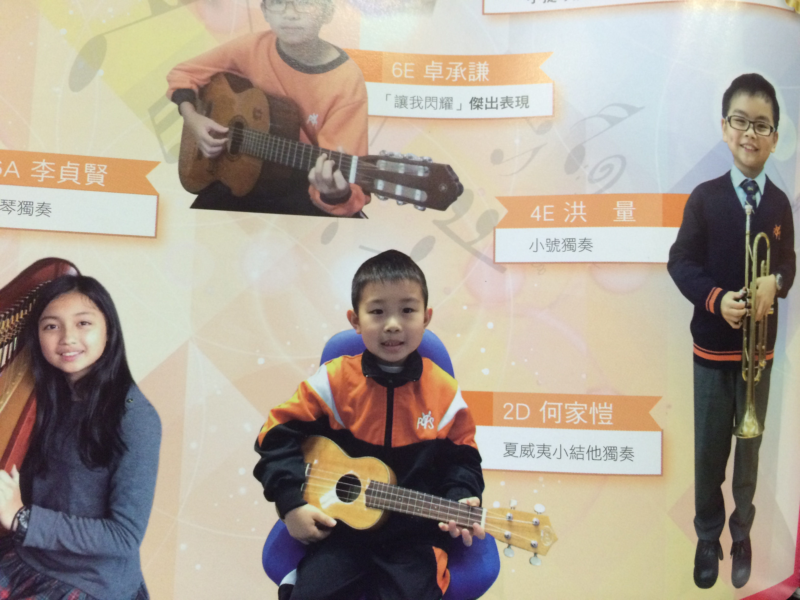
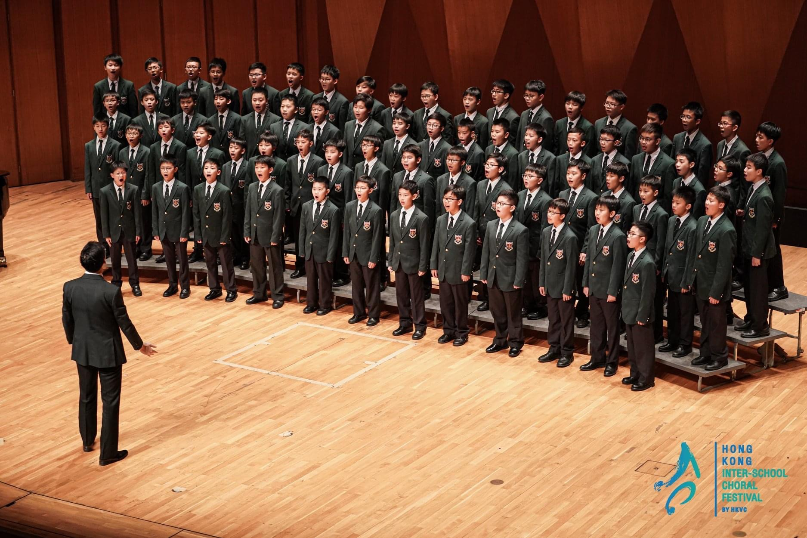

Music
Early Age
As a young toddler in Hong Kong, I began music journey with the Junior Music Course at Tom Lee where I had choir experience and group piano lessons with my dad who has always been a major influence in my music making.
Primary School
In 2nd Year of Primary School, upon hearing an outreach recital played by members of the Hong Kong Philharmonic, that day I decided to start learning the flute. Since then, I began journey as a flautist for many years to come.
Video of me (aged ~8) playing with my brother
Apart from Flute, I also had a brief period of singing and ukulele (upon inspiration by my uncle John!). With my Dad and my brother, we also won singing competitions as a family in two separate years. These led to opportunities to perform at the school's annual concert.
 
Later on in my primary school years, I also joined the school's wind band led by Ms. Wing Kam Chau. After graduating, I also joined Ms. Chau's Hong Kong Harmonious Wind Philharmonic.
Secondary School/Middle School
 Around 2021, just after COVID, I started to realise my interests in Music and started to treat it more seriously. Apart from my flute lessons with Mr. Raymond Yuen, I also started taking violin lessons, under the inspiration of TwoSetViolin and Ray Chen, with Mr. Arthur Choi.
During the time at my Secondary School, I also became a member of the Junior Choir @Wah Yan College Kowloon. I also had the opportunities to be part of and perform as a Woodwind Quartet in the annual concert May 2021 just prior to heading to the UK.
Junior Conservatoire
After a year with Ms. Anette Kormann in addition to online lesson with Mr. Yuen and Mr. Choi, I decided to try my luck and applied to the Junior Department of Royal Birmingham Conservatoire. To my surprise, I was absolutely delighted finding out that I got accepted. During my time at JRBC, I was taught by Ms. Liz Wrighton and Mr. Sam Mason.
By the end of my 1st year at JRBC, the wind orchestra director Jeff Snowdon made a call for student composition to be played by the ensemble and those submitted had the opportunities to conduct it ourselves. Naturally, I again tested my luck and proposed a piece 'Sinfonia Concertante'. Due to, however, a number of reasons, I was offered to do this piece in a concert next year. During the sightreading session, Mr. Snowdon appreciated my conducting skills and suggested that I study conducting under Ms. Margarita Mikhailova
Then the next year came - After working further on the piece over the summer, I am finally priemered the piece in Feburary 2024.
Royal Holloway
Year 1
In September 2024, I began my study as a Physics with Music student at Royal Holloway. Despite switching to a different course due to time clashes between the two department, I continued my music activity.


.JPG)
I served briefly as Junior Assistant Conductor to Ms. Rebecca Miller. I am also an active member of String Society and Conductor's Collective.
Year 2
In 2nd year, I am serving as the Conducting Coach for Conductor's Collective.